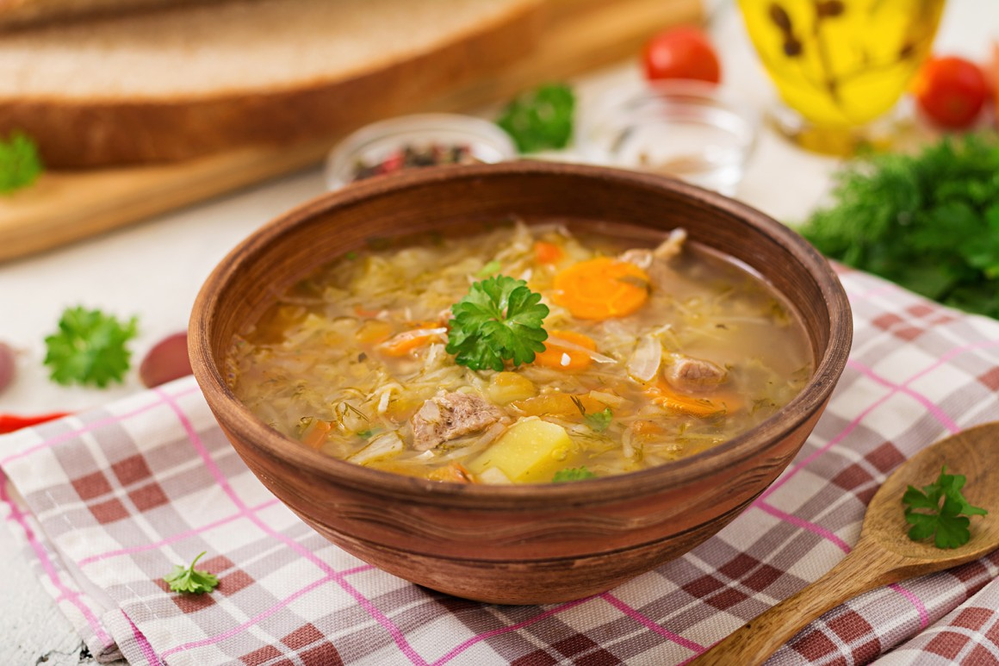
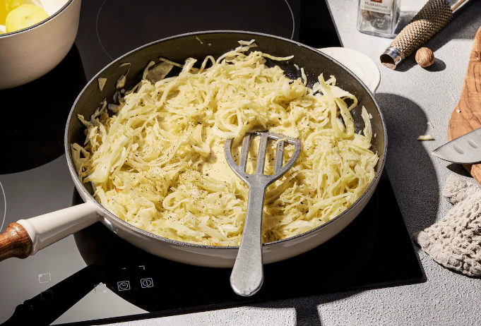
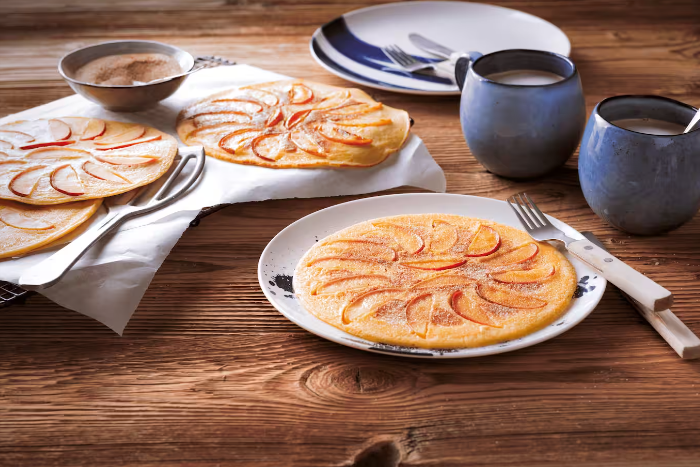

Russische Kohlsuppe

Zutaten:
- 400 g Rindfleisch (z. B. Beinscheibe)
- 500 g Weißkohl
- 1 Zwiebel
- 2 Möhren
- 2 Kartoffeln (mehlig kochend)
- 2 EL Pflanzenöl
- 2 Lorbeerblätter
- Salz
- Pfeffer
- 7 g Dill (frisch)
- 200 g Saure Sahne
Anleitung:
- Das Rindfleisch in einen großen Topf mit ca. 2 Liter kaltem Wasser geben. Das Fleisch aufkochen und ca. 1,5 bis 2 Stunden bei mittlerer Temperatur köcheln lassen, bis das Fleisch gar ist. Gelegentlich den Schaum abschöpfen.
- Vom Weißkohl die äußeren Blätter und den Strunk entfernen und den Kohl dann in feine Streifen schneiden. Die Zwiebel schälen und ebenfalls in Streifen schneiden. Möhren und Kartoffeln schälen und grob würfeln.
- In einem zweiten großen Topf das Öl bei mittlerer Temperatur erhitzen und die Zwiebeln darin einige Minuten andünsten, bis die weich sind. Möhren, Kartoffeln und Kohl dazugeben und für ca. 5 Minuten mitdünsten.
Rahmkohl

Zutaten:
- 1 Weißkohl (klein, ca. 800 g)
- 1 Zwiebel
- 2 Zehe(n) Knoblauch
- 2 EL Butter
- 200 ml Gemüsebrühe
- 200 ml Sahne
- Salz
- Pfeffer
- Muskatnuss (frisch gerieben)
Anleitung:
- Den Weißkohl gründlich waschen, vom Strunk befreien und in feine Streifen schneiden oder hobeln. Zwiebel und Knoblauch schälen und fein würfeln.
- Die Butter in einem großen Topf bei mittlerer Hitze zerlassen. Zwiebel und Knoblauch darin glasig dünsten. Den Kohl zufügen und einige Minuten mitdünsten.
- Die Brühe angießen, alles einmal aufkochen, dann die Temperatur reduzieren, den Topf abdecken und den Kohl 15–20 Minuten bei mittlerer Hitze köcheln lassen, bis er weich und zart ist.
- Die Sahne unterrühren und den Kohl weitere 5 Minuten etwas cremig einköcheln lassen. Mit Salz, Pfeffer sowie Muskatnuss abschmecken und servieren. Dazu passen Pell- oder Salzkartoffeln.
Apfel-Pfannkuchen

Zutaten:
- 200 g Weizenmehl Type 405
- 2 EL Zucker
- Salz
- 4 Eier
- 250 ml Milch
- 2 Äpfel
- 4 TL Butter
Anleitung:
- Mehl, Zucker und 1 Prise Salz mischen, mit Eiern und Milch zu einem glatten Teig verrühren. Teig ca. 10 Minuten quellen lassen. Äpfel waschen, vierteln, Kerngehäuse entfernen und Viertel in dünne Spalten schneiden.
- 1 TL Butter in einer Pfanne schmelzen, ¼ des Teiges in die Mitte geben und nach außen verteilen. ¼ der Apfelspalten auf dem Teig verteilen und Teig zugedeckt ca. 1 Minute bei mittlerer Temperatur stocken lassen. Pfannkuchen wenden und 1-2 Minuten backen. Auf dieselbe Art mit den restlichen Zutaten 3 weitere Pfannkuchen backen.